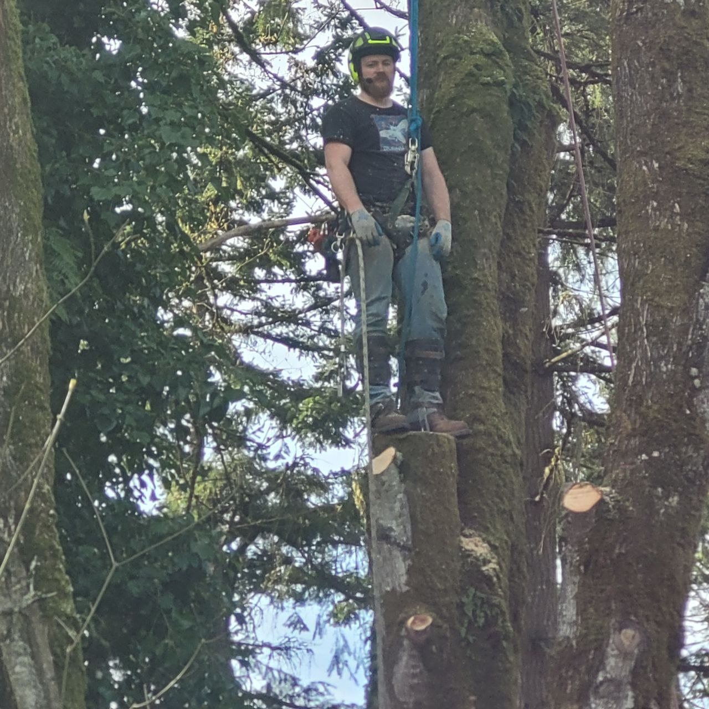

A family-run tree care company rooted in the Pacific Northwest for over 25 years.

Take A Bough Tree Service started with a simple idea: provide honest, reliable tree care at a fair price. What began as a one-truck operation in Snohomish County has grown into a full-service tree care company serving nine counties across the greater Puget Sound region.
Over the past 25 years, we've built our reputation one job at a time — showing up when we say we will, doing the work right the first time, and leaving every property cleaner than we found it. Our crews are trained in the latest safety protocols and equipped with commercial-grade machinery to handle projects of every scale.
We've stayed true to our roots as a family-run business. Every client gets the same personal attention and quality of work, whether it's a single branch trim or a five-acre land clearing project. When you call Take A Bough, you're not getting a call center — you're talking to the people who will actually be on your property doing the work.
The principles that guide every job we take on.
Every crew member is trained in OSHA and ANSI safety protocols. No shortcuts, no exceptions. Your property and our team go home safe every day.
We give you a straight answer and a fair price. If a tree doesn't need to come down, we'll tell you. We build trust by doing the right thing, even when no one's watching.
We recycle 100% of the wood and green waste we remove. We practice selective clearing and recommend replanting strategies to keep the Pacific Northwest green.
We approach every tree with the skill and respect it deserves. Clean cuts, proper technique, and attention to detail — that's what sets professional tree care apart.
From the first call to the final cleanup, you'll always know what's happening. We explain the work, provide written estimates, and follow up after every job.
We live and work in the same communities we serve. Supporting local families and businesses isn't just what we do — it's who we are.
Commercial-grade tools for every job, big or small.
Safe aerial access up to 75 feet
Commercial grinders for any stump size
High-capacity wood chippers for fast cleanup
Precision lowering for tight-space removals
Full debris hauling and green waste recycling
Professional-grade saws maintained daily